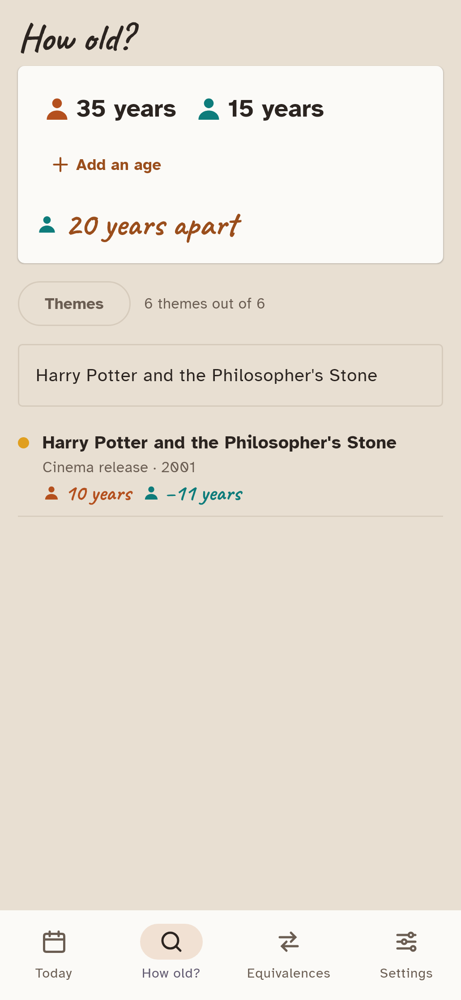
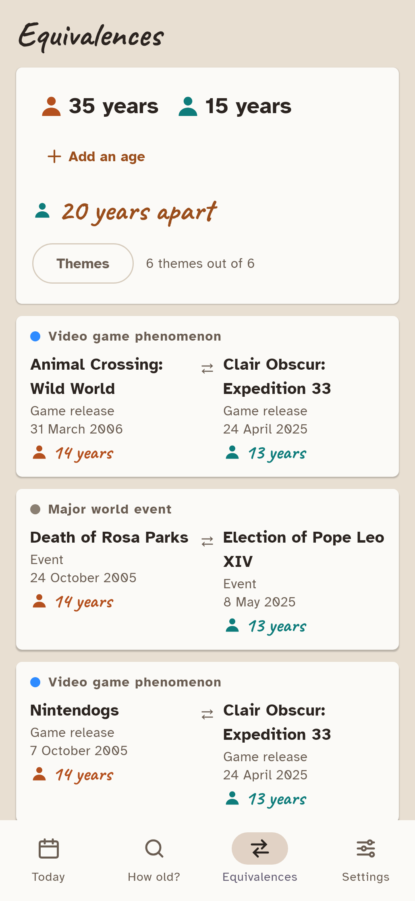
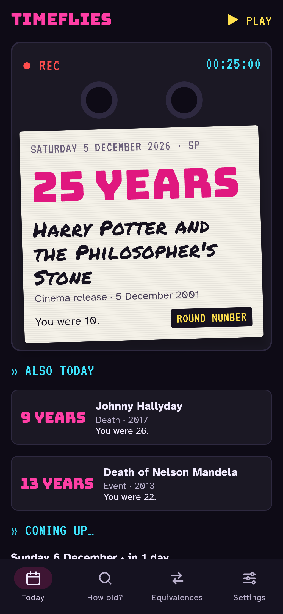
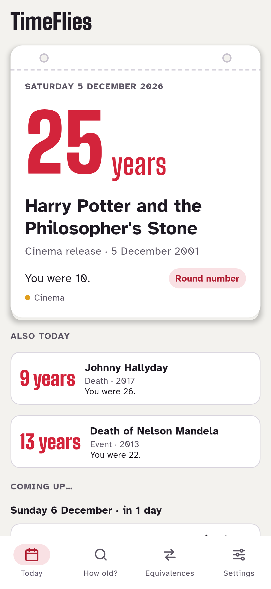
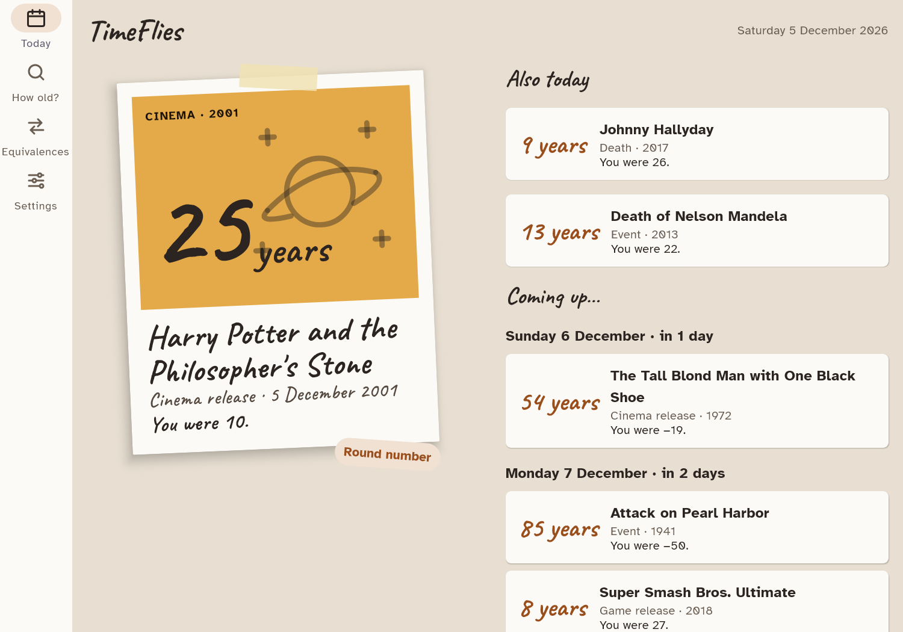

The app that makes you feel old, every day.
TimeFlies gives you the anniversaries of the films, series, songs, matches and big events that marked your life, and how old you were: “Harry Potter came out 25 years ago. You were 10.” It also finds equivalences: for a 15-year-old today, Friends is what Happy Days was for you.
Free and open source (GPL-3.0) · Android 8.0 and later, Windows 10 and 11 (64-bit) · Interface in English, French, German, Italian and Spanish · No account, no data collected.



What it shows
- Today
The anniversaries of the day, round numbers first (10, 15, 20, 25 years…), with the age you had. Nothing today? The closest ones of the coming days.
- How old?
Pick any event and see how old you were, side by side with up to three other ages, negative before a birth.
- Equivalences
For someone younger or older, the events of the same type shifted by your age gap: the sitcom, the console, the summer hit of their own youth.
- Nearly 1,000 dated events
Series and TV, cinema, music, games and tech, sport and history, each checked to the day. Untick the themes that do not speak to you.
- Android widget
Today's reminder on your home screen, updated every day.
- Windows tray and notification
An icon in the taskbar and a notification in the morning, when you want it.
- Three styles
Polaroid, with ages written by hand, VHS tape or tear-off calendar, in Settings › Display.
- Private by design
Only your birth month and year, never the day, kept on your device. The only connection is a daily check for a new version on GitHub, which you can turn off.
Three styles


On Windows too

Get started
- Download the file for your device from the latest release:
TimeFlies-X.Y.Z.apkfor Android,TimeFlies-X.Y.Z-Setup.exefor Windows. - Install it. Android asks you to allow installing apps from your browser, as for any app that is not on the Play Store. Windows may warn about an installer from an unknown publisher: choose “More info”, then “Run anyway”.
- Give your birth month and year, untick the themes you do not care about, and feel old. Details in the installation guide.
Screenshots of the real app, for someone born in May 1991. Event dates are those of France for now.
« Pour un gars qui a 15 piges aujourd'hui, Friends, c'est exactement ce que Happy Days était pour nous. »
Inspired by the French comedy series Bloqués, episode 108.